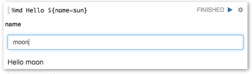
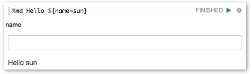
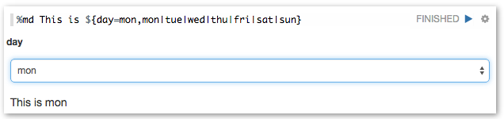
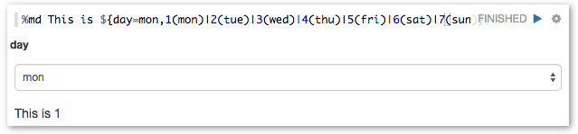
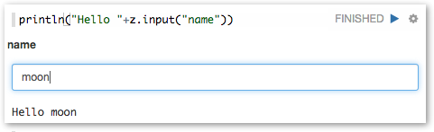
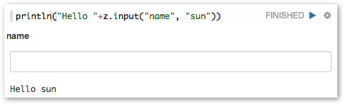
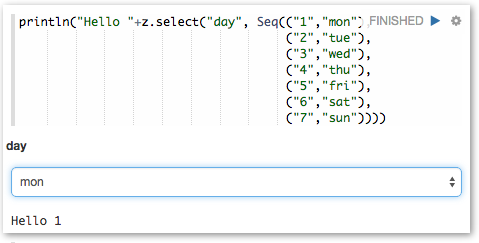

Zeppelin dynamically creates input forms. Depending on language backend, there're two different ways to create dynamic form. Custom language backend can select which type of form creation it wants to use.
This mode creates form using simple template language. It's simple and easy to use. For example Markdown, Shell, SparkSql language backend uses it.
To create text input form, use ${formName} templates.
for example

Also you can provide default value, using ${formName=defaultValue}.

To create select form, use ${formName=defaultValue,option1|option2...}
for example

Also you can separate option's display name and value, using ${formName=defaultValue,option1(DisplayName)|option2(DisplayName)...}

Some language backend uses programmatic way to create form. For example ZeppelinContext provides form creation API
Here're some examples.
Text input form

Text input form with default value

Select form
